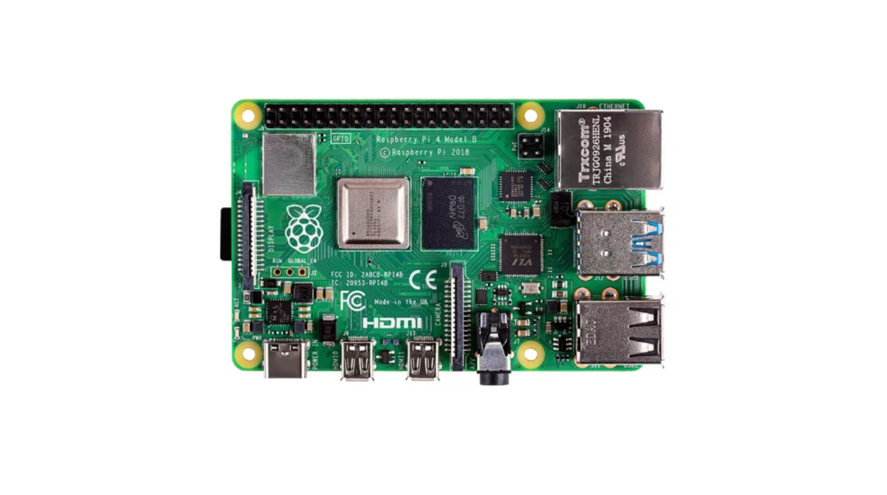
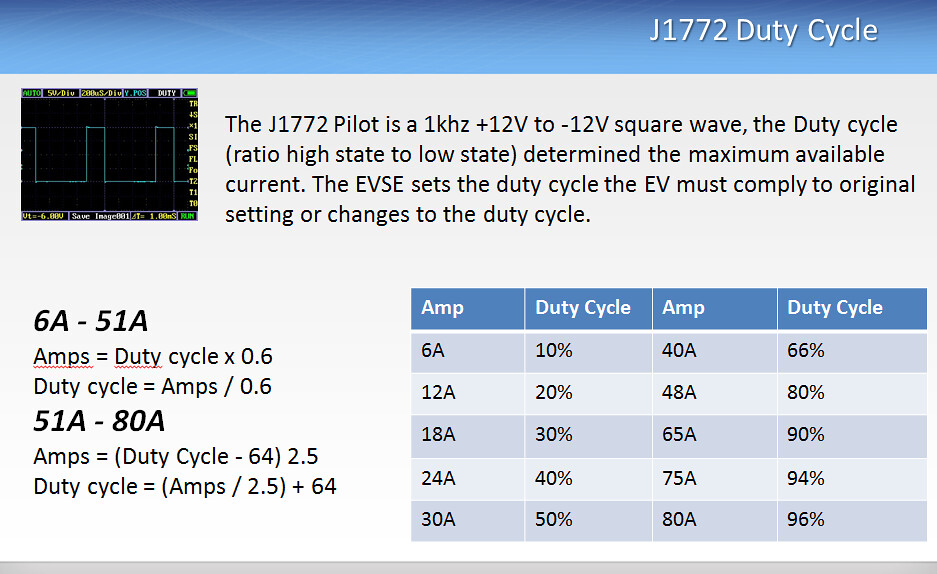

freeV2G
View Code ↗At Powersoft 19, I led the development of a freeV2G system, a classified project that showcased my expertise in Vehicle-to-Grid (V2G) technology and EV charging. This project built upon the open-source OpenEVSE platform, integrating it with Sevenstax Whitebeet boards and a Raspberry Pi 4 to create a bidirectional charging solution. As a classified effort, I can’t share specific images or sensitive details, but I’ll walk you through the technical journey in a way that highlights my deep understanding of V2G, OpenEVSE, and the hardware-software synergy I mastered. This project allowed EVs to not only charge from the grid but also send power back, a game-changer for energy management!
Project Overview
The freeV2G system was designed as a Level 2 (L2) EV charger with bidirectional capabilities, supporting up to 7.4 kW at 230V AC (single-phase) for charging and the same capacity for discharging back to the grid. Built on the OpenEVSE framework—an open-source EV Supply Equipment (EVSE) platform—I customized it to enable V2G functionality, aligning with standards like IEC 61851-1 and ISO 15118-2. I used two Sevenstax Whitebeet boards—one as the EVSE (charger) and one as the EV (vehicle)—and a Raspberry Pi 4 as the central controller, running custom Python firmware. This setup allowed me to implement advanced features like Signal Level Attenuation Characterization (SLAC) matching, handshaking, authorization, and bidirectional power flow control.
Think of this as a two-way street for energy: the EV can charge when the grid has excess power (e.g., during off-peak hours) and discharge when the grid needs support (e.g., peak demand or renewable energy integration). My role was to tie all these pieces together, ensuring safety, compliance, and seamless communication.
System Architecture
The architecture was a blend of hardware and software designed for bidirectional operation. The Whitebeet-EI (EVSE module) and Whitebeet-PI (EV module) from Sevenstax were the communication powerhouses, supporting ISO 15118-2 for V2G. These boards handle powerline communication (PLC) and the Control Pilot (CP) signal, making them perfect for this project. The Raspberry Pi 4 served as the brain, running my custom Python firmware to orchestrate the OpenEVSE system and manage V2G operations.

Note: This image is taken from Sevenstax.
I connected the Whitebeet boards to the Pi 4 via Ethernet using the Host Control Interface (HCI). The Pi 4’s quad-core processor handled the heavy lifting, processing data from the Whitebeet boards and controlling the bidirectional power flow through relays and inverters (not detailed due to classification). The OpenEVSE framework provided the base for CP signal generation and state management, which I extended with V2G logic.
Note: This image is taken from the Raspberry Pi site.
OpenEVSE Integration and V2G Firmware Development
The OpenEVSE platform was my starting point, originally designed for unidirectional charging. I adapted its firmware to run on the Raspberry Pi 4 using Python, integrating it with the Whitebeet boards for V2G capabilities. OpenEVSE’s RAPI (Remote API) protocol was key—it let me dynamically control charging parameters like current and state, which I extended to handle discharging parameters too.
My Python firmware managed the CP signal, a 1 kHz PWM signal per IEC 61851-1, with states like +12V (State A, not connected), +9V PWM (State B, connected), and +6V PWM (State C, charging or discharging). For V2G, I added a new state (State D) to indicate bidirectional operation, using the Whitebeet-EI board to adjust the CP duty cycle and signal the EV’s intent to discharge. The firmware also interfaced with the Whitebeet boards to enable ISO 15118-2 communication, which is crucial for V2G.
Note: This image is taken from OpenEVSE.
I designed a state machine to handle the complex transitions of V2G. For example, when the EV connects (State B), the system negotiates charging or discharging based on grid demand signals received via ISO 15118. If discharging is requested, the firmware adjusts the relays and inverter to reverse power flow, all while ensuring safety checks are met.
SLAC Matching and ISO 15118-2 Communication
The heart of V2G communication lies in Signal Level Attenuation Characterization (SLAC) matching, which I implemented using the Whitebeet boards. SLAC establishes a reliable PLC link between the EVSE and EV, a must for ISO 15118-2. I used the Whitebeet-EI to initiate SLAC by setting the CP duty cycle to 5%, prompting the Whitebeet-PI (EV) to respond with SLAC requests. My Python script monitored this process, using commands like slacStartMatching() and checking slacMatched() to confirm a stable link.
Once matched, the ISO 15118-2 protocol kicked in, enabling a handshake and authorization process. This included:
- Session Setup: Exchanging protocol versions, session IDs, and V2G capabilities (e.g., maximum discharge power).
- Authorization: Using Plug-and-Charge (PnC) with digital certificates to authenticate the EV for both charging and discharging.
- Energy Transfer: Negotiating parameters for bidirectional power flow, such as current limits and energy direction (grid-to-vehicle or vehicle-to-grid).
- Monitoring: Continuously adjusting power based on grid demand or EV battery state, retrieved via the Whitebeet-PI.
This setup allowed the EV to act as a mobile energy storage unit, feeding power back to the grid when needed—a concept I fully grasped and implemented with precision.
Hardware Integration: Whitebeet Boards and Raspberry Pi 4
The Whitebeet-EI and Whitebeet-PI boards were perfect for this V2G project. The Whitebeet-EI managed the EVSE side, generating the CP signal and handling PLC communication, while the Whitebeet-PI simulated the EV, responding to CP changes and sending V2G data. Both boards support ISO 15118-2, with built-in modems for SLAC and high-speed Ethernet for HCI communication with the Pi 4.
I configured the Raspberry Pi 4 with Raspbian OS, optimizing it for real-time control. The Pi’s GPIO pins monitored the Proximity Pilot (PP) for cable detection, and I used Ethernet to connect the Whitebeet boards. Setting up the boards involved configuring their MAC addresses—e.g., adjusting the Ethernet MAC by subtracting 2 from the PLC MAC’s last octet (e.g., c4:93:00:22:22:24 to c4:93:00:22:22:22)—which took some trial and error but ensured reliable communication.
Safety and Compliance
Safety was non-negotiable, especially with bidirectional power flow. The OpenEVSE framework helped me implement standards like SAE J1772 and IEC 61851-1, with added V2G safety checks:
- Ground Continuity Monitoring (GCM): Tested the ground connection with a 1 mA current, halting operation if faulty.
- Residual Current Detection (RCD): Detected leakage currents above 30 mA, tripping the system to prevent hazards.
- Bidirectional Relay Control: Used relays to switch between charging and discharging modes, with a test phase before activation.
My Python firmware included real-time monitoring, opening relays if the CP signal indicated a fault (e.g., 0V) or if the grid signaled an emergency stop.
Testing and Validation
I tested the freeV2G system extensively, using the Whitebeet-PI to simulate an EV. Key tests included:
- CP Signal Validation: Verified the CP signal’s amplitude and states with an oscilloscope, ensuring V2G transitions worked.
- SLAC Matching: Confirmed a stable PLC link between Whitebeet boards, critical for ISO 15118-2.
- V2G Operation: Simulated bidirectional power flow, charging the EV to 80% SoC and then discharging 2 kW back to the grid.
- Authorization: Tested PnC authentication, ensuring only authorized EVs could participate in V2G.
- Fault Handling: Introduced faults (e.g., ground fault) to verify safe shutdowns.
The system passed all tests, proving its reliability for both charging and discharging, a testament to my understanding of V2G and OpenEVSE.
Technical Features
- Level 2 bidirectional charging/discharging at 7.4 kW (230V AC, 32A).
- Custom Python firmware on Raspberry Pi 4, extending OpenEVSE for V2G.
- Whitebeet-EI and Whitebeet-PI boards for ISO 15118-2 and SLAC communication.
- Control Pilot (CP) and Proximity Pilot (PP) handling for state management.
- State machine for safe bidirectional operation, with dynamic power adjustment.
- ISO 15118-2 for handshaking, authorization, and V2G energy transfer.
- Comprehensive safety features, including GCM, RCD, and relay testing.
This classified project at Powersoft 19 was a pinnacle of my career, cementing my status as an EV charging and V2G expert. Mastering OpenEVSE, integrating Whitebeet boards, and developing custom firmware on Raspberry Pi 4 gave me a holistic view of bidirectional charging systems. It’s exciting to know I helped pave the way for smarter energy grids, and I’m eager to apply this knowledge to future innovations!